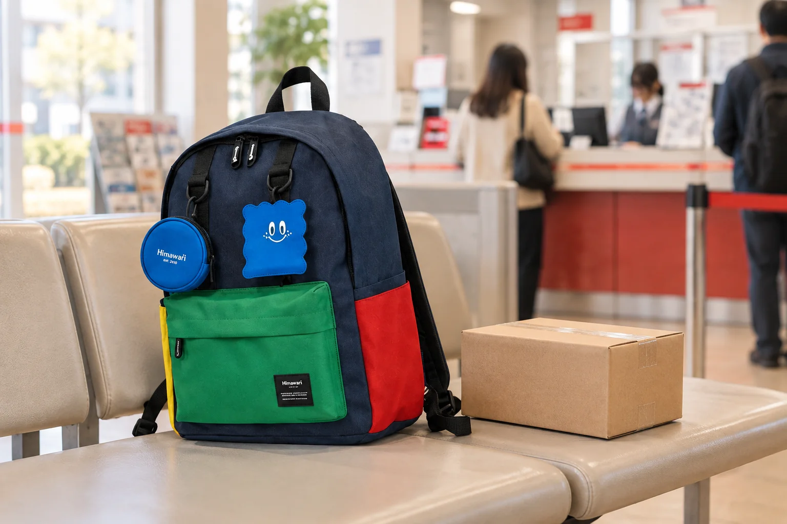
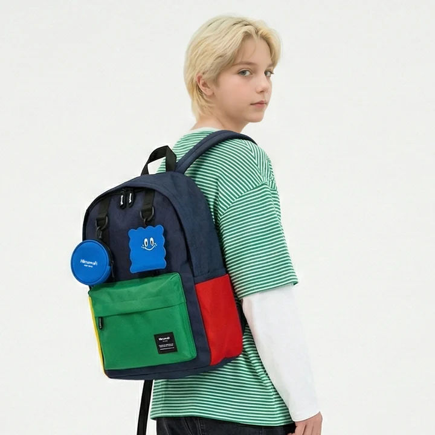

작은 소포를 부치는 날의 두 가지 짐

우체국에 작은 소포를 부치러 가는 날에는 나갈 때 두 개의 짐을 들지만 돌아올 때는 하나가 됩니다. 접수할 상자와 백팩을 같은 묶음처럼 다루면 창구에서 상자를 꺼내느라 개인 물건까지 움직일 수 있습니다. 상자는 상대에게 보낼 물건이고 백팩은 계속 내 곁에 남을 물건입니다. 이 차이를 출발 전에 정리하면 주소를 확인하고 필요한 안내를 듣는 동안 손에 무엇을 남겨둘지 판단하기 쉽습니다.
보낼 물건의 접수 가능 여부와 포장 방법은 이용할 서비스의 공식 안내에서 먼저 확인합니다. 같은 크기의 상자라도 내용물이나 목적지에 따라 준비할 것이 달라질 수 있으므로 다른 사람의 방문 경험만으로 정하지 않습니다. 상자에 적힌 주소와 필요한 연락 정보도 발송 전에 대조해두세요. 확인할 자료가 휴대전화에 있다면 어느 화면인지 미리 알아두고, 종이라면 개인 서류와 섞이지 않게 따로 모아둘 수 있습니다.
상자를 닫았다면 겉면과 손으로 잡을 위치를 봅니다. 들뜬 테이프 끝이나 눌린 모서리는 이동하면서 다시 벌어지는지 확인해야 할 부분입니다. 포장 보완이 필요한지는 내용물에 맞는 안내를 따르되, 백팩에 억지로 밀어 넣어 가방 지퍼가 상자를 누르는 방식은 피할 수 있습니다. 상자가 들어가지 않는다면 별도로 들고 이동할 방법을 정합니다. 소포의 크기와 가방의 외부 크기를 비교하는 것만으로 운반이 끝나는 것은 아닙니다.
기다리는 동안 손에 남길 것
대기할 때 휴대전화와 지갑을 전부 꺼내둘 필요는 없습니다. 접수 순서를 확인할 때 사용할 물건만 손에 남기고, 나머지는 백팩의 닫힌 위치에 두면 됩니다. 상자를 가방 위에 올려놓으려 한다면 두 물건이 함께 움직일 수 있는지 먼저 살펴보세요. 내려놓을 자리가 따로 없다면 안정적으로 잡고, 창구를 향해 이동할 때 다른 사람의 길을 막지 않는 위치를 생각합니다.
주소가 적힌 면을 계속 밖으로 향하게 들고 있을 필요는 없습니다. 상자를 잡는 방향을 바꾸어도 포장이 눌리지 않는지 보고, 개인 정보가 필요한 순간에만 확인할 수 있도록 준비할 수 있습니다. 주소를 가리려고 테이프를 다시 붙이거나 표기를 손상하면 접수할 때 어려울 수 있으므로 표기 자체는 공식 안내에 맞는 상태로 둡니다. 운반 중의 노출과 접수에 필요한 정보는 각각의 상황에서 다루면 됩니다.
접수 뒤 다른 볼일이 이어진다면 Himawari No.0422 제품 정보의 블루 모델 같은 개인 가방에는 지갑과 연락 도구를 남겨두는 구성을 생각할 수 있습니다. 상자는 보낼 짐으로 따로 준비하고 백팩은 계속 사용할 짐으로 구분하는 방식입니다. 우편물을 맡긴 뒤 받아온 접수 자료는 이 가방의 정해진 위치에 넣습니다. 가방 하나를 새로 고르기 전에 평소 짐에서 접수할 때 쓸 묶음만 먼저 정리해볼 수도 있습니다.

예를 들어 접수할 상자는 별도 운반 가방에 두고 백팩에는 지갑과 휴대전화, 주소 확인 자료만 남기는 구성을 생각할 수 있습니다. 이 경우 상자를 꺼낸 뒤 빈 운반 가방을 어떻게 가져올지도 미리 정해야 합니다. 빈 가방을 접어둘 수 있는지, 계속 손에 들 것인지는 그 물건의 구조에 따라 확인하면 됩니다. 여러 개의 소포를 한꺼번에 보낼 때에는 상자별 자료가 뒤바뀌지 않도록 보내는 묶음마다 구분할 표시가 필요합니다.
창구에서는 안내에 따라 상자를 먼저 제시하고, 확인이나 결제에 필요한 물건을 차례로 꺼냅니다. 포장을 보완해야 한다면 백팩의 모든 짐을 꺼내 작업 공간을 차지하기보다 필요한 것만 준비할 수 있는지 봅니다. 서비스 종류와 요금, 추가 표기는 담당 안내를 확인하고 결정하세요. 줄이 움직인다는 이유로 설명을 듣기 전에 급히 가방을 닫으면 필요한 자료를 다시 찾게 될 수 있으니, 확인이 끝난 묶음부터 정리하면 됩니다.
상자를 맡긴 뒤 바뀌는 동선
접수 뒤에는 상자 대신 종이 증빙이나 전자 안내가 남을 수 있습니다. 종이를 받았다면 안내받은 정보가 맞는지 확인하고 지갑의 오래된 영수증 사이에 섞기보다 정해진 곳에 둡니다. 상자를 들던 손에 그대로 쥐고 나오면 다른 물건을 집는 순간 놓치기 쉽습니다. 증빙의 형태와 보관 방법은 해당 서비스 안내에 따르며, 확인할 정보가 있다면 집에 돌아와 다시 찾을 수 있도록 위치를 남겨두면 됩니다.
전자 안내를 받는 경우에는 알림을 받은 위치와 다시 확인할 경로를 알아둡니다. 별도의 기록을 남기려고 화면을 촬영한다면 주소와 연락처가 포함되는지 먼저 살펴보세요. 이를 공개 게시물에 올릴 계획이 없다면 개인 보관에서도 다른 사진과 구분할 방법을 정할 수 있습니다. 접수가 끝났다는 이유로 휴대전화를 창구에 둔 채 백팩만 메지 않도록, 자리를 떠나기 전 손에 꺼냈던 물건을 확인합니다.
소포를 맡긴 뒤 다른 볼일이 이어진다면 빈손이 된 상태에서 짐을 다시 정리할 수 있습니다. 접수 자료는 백팩의 정해진 위치에 넣고, 이어지는 이동에 필요한 교통카드나 연락 도구만 쉽게 찾을 수 있게 둡니다. 상자 운반에 쓴 별도 가방이 있다면 가져갈 물건의 개수에 포함합니다. 길을 나서기 전에 지퍼를 닫고 여유 끈이 손에 들고 있는 물건과 엉키지 않는지도 한 번 살펴보세요.
집에서는 접수에만 썼던 임시 메모와 계속 보관할 증빙을 나눕니다. 주소를 적어둔 종이에 개인 정보가 있다면 밖에 그대로 드러나지 않게 관리하세요. 발송 뒤 확인할 일이 있는 자료는 서비스 안내에 따라 보관하고 다시 열 수 있는 위치를 정합니다. 다음날 백팩에 다른 문서를 넣을 예정이라면 그 자료가 접수증 위에 쌓이지 않도록 옮겨둘 수 있습니다. 상자는 떠났어도 발송에 관한 확인 자료는 필요한 동안 찾을 수 있는 곳에 남습니다.